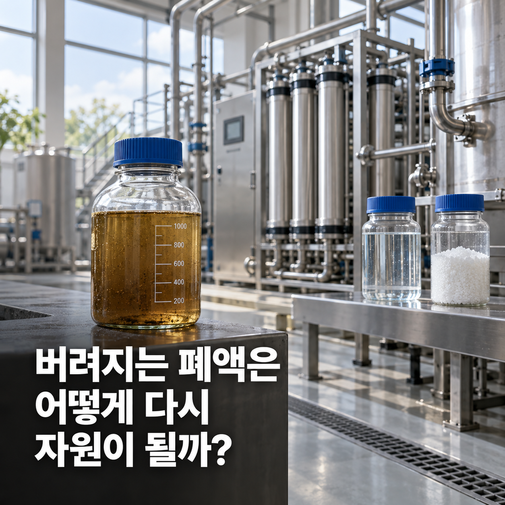
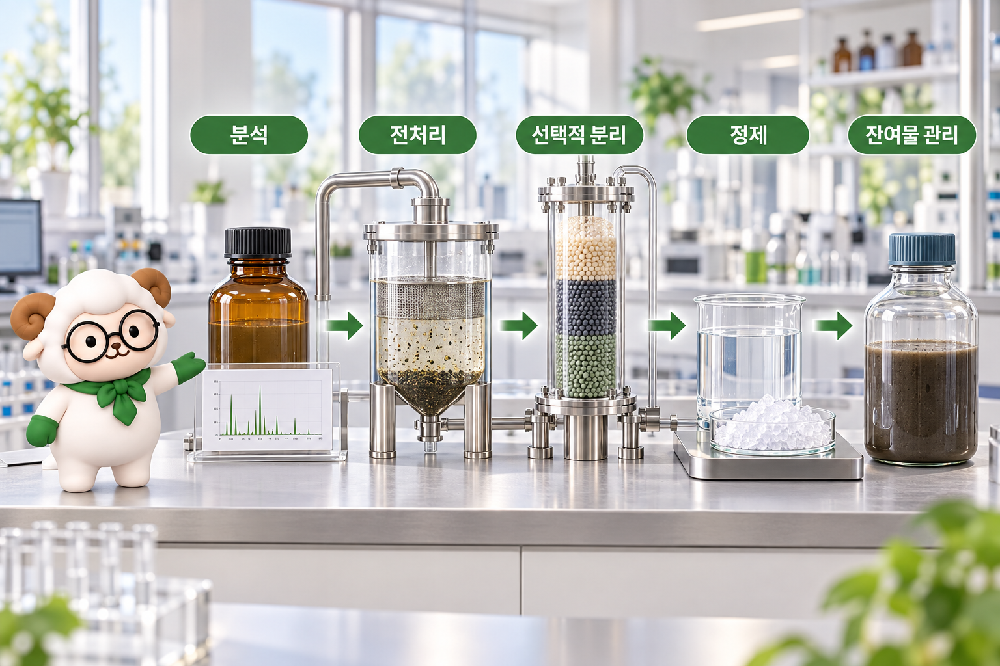

버려지는 폐액은 어떻게 다시 자원이 될까?

안녕하세요, 바이켐입니다.
산업 현장에서 사용한 액체는 공정을 거치며 여러 성분이 섞인 폐액이 될 수 있어요.
이 폐액을 단순히 버려야 할 물질로만 볼 수 있을까요?
폐액의 조성과 상태를 정확히 파악하고 적절한 분리정제 과정을 거치면, 일부 성분은 다시 원료로 활용할 가능성을 검토할 수 있습니다.
다만 모든 폐액이 자원이 되는 것은 아니에요.
회수할 성분의 양과 품질, 처리 과정에서 드는 에너지, 남는 물질의 관리까지 함께 따져야 합니다.
📌 폐액은 왜 서로 다를까요?
폐액은 사용된 공정과 원료에 따라 성격이 달라집니다.
겉보기 색이 비슷해도 녹아 있는 금속 이온, 염, 유기물과 미세 입자의 종류와 농도는 다를 수 있어요.
같은 공정에서 나온 폐액도 운전 조건과 세척 단계에 따라 조성이 달라질 수 있습니다.
따라서 이름이나 색만 보고 처리 방법을 정하기는 어려워요.
먼저 대표 시료를 채취해 산도, 고형물, 목표 성분과 방해 성분을 확인해야 합니다.
이 분석 결과가 뒤에 이어질 분리 방법과 목표 품질을 정하는 기준이 돼요.
회수하려는 물질의 농도가 너무 낮거나 불순물이 복잡하면 기술적으로 분리할 수 있어도 경제성과 환경성이 낮을 수 있습니다.
🧪 첫 단계는 분석과 흐름 분리예요
서로 다른 폐액을 한곳에 섞으면 목표 성분이 희석되거나 새로운 침전물이 생길 수 있어요.
분리에 방해되는 성분이 늘어 공정이 복잡해질 수도 있습니다.
그래서 발생 지점과 조성이 다른 흐름을 구분해 관리하는 것이 중요해요.
금속을 포함한 폐수의 경우에도 관련 흐름을 따로 모으고 선택적으로 전처리하는 접근이 활용됩니다.
전처리에서는 떠다니는 고형물, 기름 성분이나 공정에 방해되는 입자를 먼저 줄일 수 있어요.
여과, 침전과 유수 분리처럼 비교적 앞단에 놓이는 방법들이 여기에 해당합니다.
이 단계의 목적은 곧바로 고순도 제품을 만드는 것이 아니에요.
뒤의 선택적 분리 공정이 안정적으로 작동할 수 있도록 원료 상태를 정돈하는 데 있습니다.
🔎 원하는 성분만 골라내는 선택적 분리
폐액에는 목표 성분과 성질이 비슷한 물질이 함께 들어 있을 수 있어요.
이때는 특정 성분이 더 잘 붙거나, 더 잘 녹거나, 고체로 바뀌는 차이를 이용합니다.
대표적인 개념은 다음과 같아요.
① 침전은 용액에 녹아 있던 성분을 고체로 바꾸어 분리합니다.
② 용매추출은 서로 잘 섞이지 않는 액체 사이의 분배 차이를 이용해요.
③ 이온교환과 흡착은 특정 이온이나 분자가 소재 표면에 선택적으로 붙는 성질을 활용합니다.
④ 막 분리는 막을 통과하는 성분과 남는 성분의 차이를 이용해요.
어떤 방법이 항상 가장 좋다고 말할 수는 없습니다.
목표 성분의 농도와 화학적 형태, 함께 있는 불순물, 필요한 순도에 따라 조합이 달라져요.
실제 적용에서는 안전성, 약품과 물 사용량, 에너지 소비, 설비의 안정성도 함께 검토합니다.

폐액 자원화는 분석, 전처리, 선택적 분리와 정제를 거친 뒤 잔여물 관리까지 이어집니다.💎 분리한 다음에도 정제가 필요해요
목표 성분을 골라냈다고 바로 제품이 되는 것은 아닙니다.
회수물에는 비슷한 성질의 불순물이나 앞 공정에서 사용한 성분이 남을 수 있어요.
세척, 재용해, 재결정화와 추가 여과 같은 정제 단계를 거쳐 품질을 높이는 이유입니다.
최종 형태도 활용 목적에 따라 달라져요.
금속 자체가 필요할 수도 있고, 염이나 산화물, 중간 원료 형태가 더 적합할 수도 있습니다.
따라서 공정의 출발점부터 어떤 규격으로 사용할 것인지 정해야 해요.
분석 결과가 목표 규격을 충족하는지 확인해야 제품화 가능성을 판단할 수 있습니다.
회수량만 높고 순도가 부족하면 다시 처리해야 할 수 있어요.
반대로 순도를 높이는 과정에서 목표 성분 일부가 남은 액체로 이동하면 전체 회수율이 낮아질 수 있습니다.
♻️ 남은 물질까지 관리해야 순환이 완성돼요
자원 회수 공정 뒤에도 처리해야 할 액체와 고형물이 남습니다.
목표 성분을 옮겼을 뿐 불순물이 사라진 것은 아니기 때문이에요.
남은 흐름의 양과 성분을 확인하고, 재사용·추가 회수·적정 처리 가능성을 각각 검토해야 합니다.
물 사용량과 에너지 소비도 중요한 판단 기준이에요.
회수 공정 자체가 많은 자원을 쓰거나 새로운 폐기물을 늘린다면 전체적인 이점이 줄어들 수 있습니다.
그래서 폐액 재활용은 회수율 하나만으로 평가하지 않아요.
✅ 목표 물질의 함량과 최종 순도
✅ 공정 전체의 회수율
✅ 물·약품·에너지 사용량
✅ 부산물과 잔여물의 양 및 처리 방법
✅ 회수 원료를 실제로 사용할 수 있는지
이 항목을 함께 살펴야 자원 회수의 실질적인 가치를 판단할 수 있습니다.
💡 폐액이 자원이 되려면 무엇이 필요할까요?
폐액 자원화는 분석에서 시작해 전처리, 선택적 분리, 정제와 품질 확인으로 이어집니다.
그리고 마지막에는 남은 물질의 관리까지 포함해야 해요.
공정 이름만 고르는 것보다 원료 폐액과 목표 제품을 정확히 정의하는 일이 먼저입니다.
같은 금속을 회수하더라도 폐액의 출처와 불순물, 요구 규격이 다르면 필요한 과정이 달라질 수 있어요.
바이켐의 실제 폐액 재활용·금속 회수 사업, 설비, 인허가와 회수 실적에 관한 내용은 공개 승인된 자료가 확인된 뒤 안내하겠습니다.
한줄정리
폐액은 분석·전처리·선택적 분리·정제 과정을 거쳐 일부 성분의 자원화 가능성을 검토할 수 있어요.
회수율과 순도뿐 아니라 물·에너지 사용량, 부산물과 잔여물 관리까지 함께 평가해야 합니다.
본 콘텐츠에 사용된 이미지는 내용의 이해를 돕기 위해 AI로 생성되었습니다.